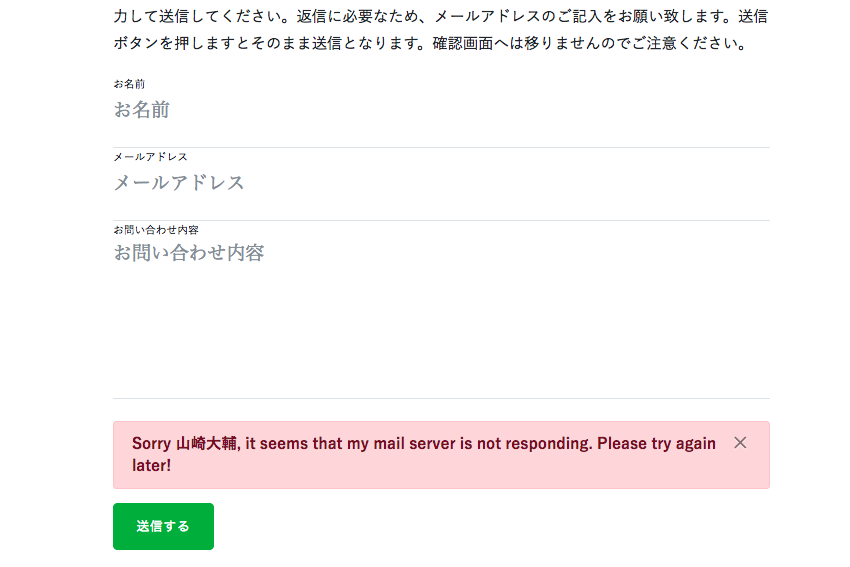
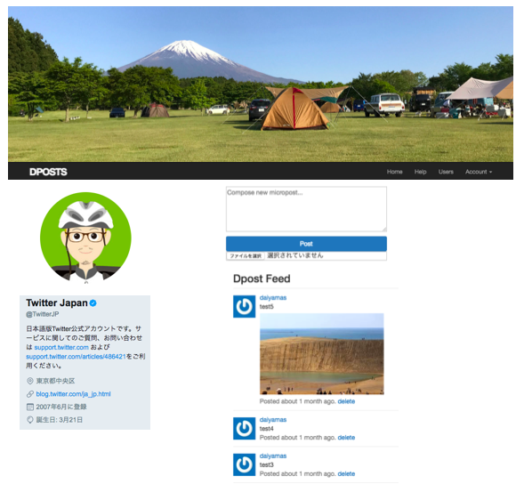

ハイライト表示の不具合は無事解消。
昨日発生したGoogle code-prettifyの不具合は、当初使用していたhighlight.jsでの
実装に戻すことで解消されました。hightlight.jsも設定が簡単な上、cssファイルを
入れ替えることで見栄えを簡単に変更することができます。今回は「railscasts」を選びました。
以下のデモページでハイライトの見た目が確認できます。

細部の見直しも随時行っていきます。
各ページの構成要素はほぼ確定できましたが、細かいスマホ版で一部画像のテキスト部分が認識できない点で 詰めていく必要がある箇所もあります。 動作確認はほぼPCだけで行っており、スマホ、タブレットPCでも全ページでチェックを行っていく必要があります。 本日現在、修正を加えていきた箇所は以下の通りです。
お問い合わせページの実装
テーマのデフォルトをそのまま流用したところ、フリーメールのドメインでは送信元に登録できない不具合が 発生しています。お問い合わせフォームはphpファイルで再度作り直す必要があります。
スマホ版で一部画像のテキスト部分が認識できない
スマートフォンで閲覧した際、ソースコードをキャプチャ画像で配置している部分のテキストが 認識できない状況が発生しています。 対策としては、モーダルを設置して拡大画像を表示される方法を検討しています。
「ページTOPに戻る」ボタンが必要!?
ページをスクロールさせていった際、ページTOPに戻るボタンの設置も考えています。現状では下へスクロールした際、 ウインド上部にnavbarが固定表示される仕様になっているのでユーザビリティは問題ないのですが、 勉強のため実装してみます。
TOPページスライダー（カールセル）のインターバルの設定変更は!?
TOPページで切り替え表示を行っている4つの画像は、だいたい5秒のインターバルでスライド表示されています。 インターバルの設定を若干遅め（プラス1秒）に変更した方が一つ一つの画像をしっかり認識できる タイミングではないかと考えています。こちらも勉強のため実装してみます。
本日のミニ備忘録
本日はBlog以外にも、面談の質問を想定した回答案の作成→添削まで進めることができました。 また、D-postのカスタマイズ案についても相原さんに相談し、下記のようなイメージで完成を目指していく予定です。